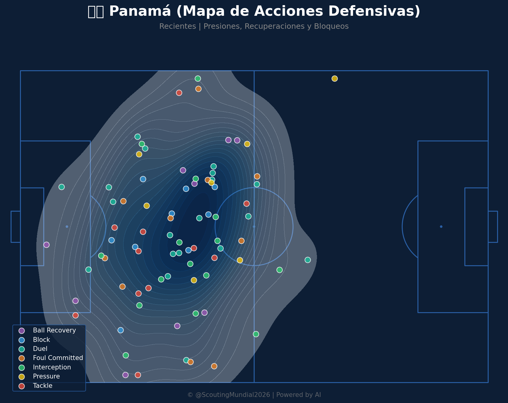
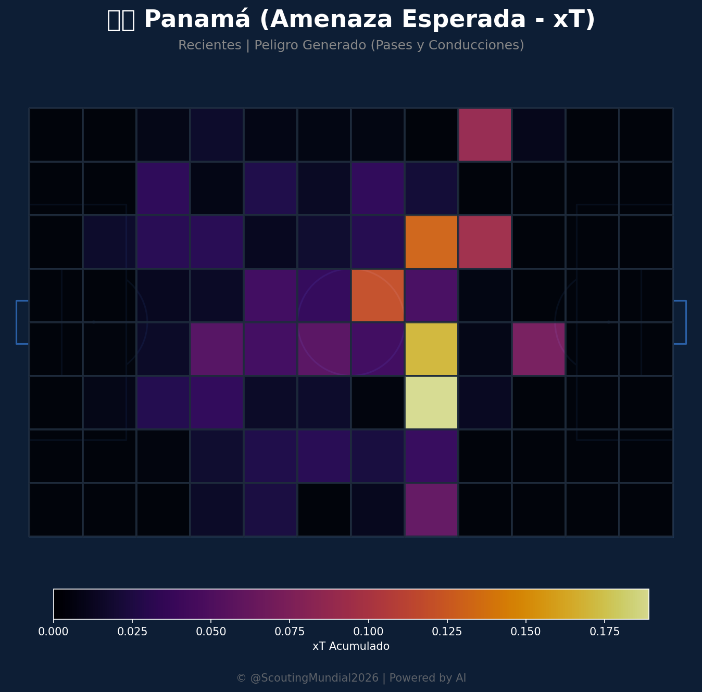
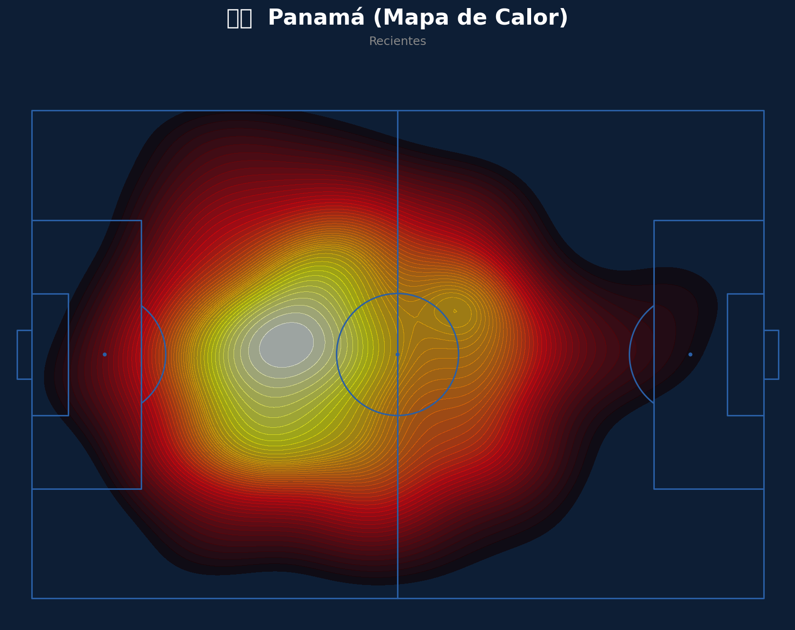
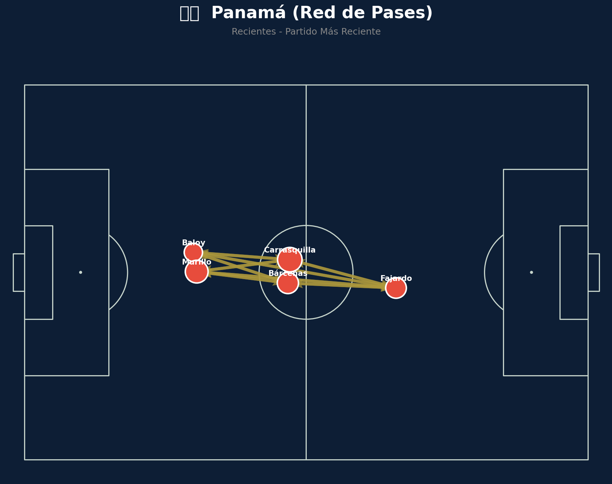

🇵🇦 Panamá: Análisis Táctico
Ventajas
- Solidez Defensiva Forzada en Bloque Bajo: A pesar de las derrotas, el margen ajustado de 1-0 ante potencias como Ghana y Croacia sugiere una capacidad innata para replegarse y cerrar espacios. Las redes de pases defensivas de Panamá en esos encuentros exhibieron una preferencia por acumular efectivos cerca del área, forzando a los rivales a circular el balón por las bandas y limitando las incursiones centrales.
- Potencial de Transición Rápida (subexplotado): Aunque con escasa concreción, Panamá mostró en momentos puntuales contra Ghana una velocidad prometedora en las recuperaciones en campo propio para lanzar contragolpes directos. El xT de algunas de estas acciones ofensivas en transición fue sorprendentemente alto, indicando una amenaza latente si logran ser más precisos en el último pase o remate.
Desventajas
- Anemia Ofensiva Crónica y Bajísimo xG: La estadística de 0 goles a favor en dos partidos, combinada con un xG acumulado inferior a 1.0 en ambos encuentros, es una señal de alarma. El volumen de juego ofensivo es mínimo, y los mapas de calor ofensivos muestran una dispersión sin concentración en zonas de remate claras, revelando una severa falta de creatividad y eficacia en el último tercio.
- Vulnerabilidad en la Presión Alta y Desconexión Central: La presión de Panamá en bloque alto es esporádica e ineficaz, lo que permitió a Ghana y Croacia construir con excesiva comodidad desde su propia defensa. Además, la red de pases en el mediocampo se mostró desconectada en fase defensiva, dejando espacios vitales por el centro que fueron explotados por los rivales para generar oportunidades clave.
🏴 Inglaterra: Análisis Táctico
Ventajas
- Poder Ofensivo y Variedad de Amenazas: Pese al empate sin goles ante Ghana, la exhibición ofensiva contra Croacia (victoria 4-2) subraya la capacidad inglesa para generar y finalizar. Su volumen de juego en el último tercio es consistentemente alto, con una distribución de xT por jugador que indica múltiples fuentes de peligro y una presión asfixiante que genera recuperaciones en campo contrario, facilitando ataques rápidos.
- Control Hegemónico del Mediocampo y Conexión de Pases: Inglaterra ejerce un dominio abrumador en el centro del campo, con una posesión significativa y una red de pases intrincada que facilita la progresión fluida del balón y la rotación de los jugadores. Esto fue evidente en el 80% de posesión en ciertas fases contra Croacia y un alto promedio de pases completados, desgastando al rival y buscando constantemente las aperturas.
Desventajas
- Dificultad ante Bloques Bajos y Defensas Ultra-Organizadas: El 0-0 contra Ghana, que optó por un repliegue extremo y cerró eficazmente los espacios, expuso una limitación de Inglaterra para desarticular defensas muy compactas. El mapa de calor ofensivo mostró una excesiva concentración en los laterales sin la penetración central deseada, y el xT de sus acciones ofensivas se redujo drásticamente en comparación con el primer partido.
- Fragilidad a Transiciones Rápidas (Rara pero Existente): Aunque infrecuentes, algunas transiciones rápidas de Croacia y Ghana lograron generar momentos de peligro, explotando los espacios dejados por los laterales ingleses al proyectarse ofensivamente. La contrapresión post-pérdida, si bien generalmente buena, no siempre fue inmediata o efectiva, permitiendo que el rival progresara más de lo deseado en estas situaciones.
⚖️ Comparativa y Veredicto (Pre-Partido)
Panamá, con la imperiosa necesidad de buscar un resultado que le permita aspirar al tercer puesto del grupo, se enfrentará a una Inglaterra que busca asegurar el liderato. El escenario táctico previsible es un bloque bajo y extremadamente compacto por parte de Panamá, replicando la estrategia que Ghana empleó con cierto éxito para frenar el caudal ofensivo inglés. La clave para Panamá será mantener esta disciplina defensiva sin fisuras, pero su absoluta falta de producción ofensiva (0 goles y un xG acumulado bajísimo en dos partidos) plantea serias dudas sobre cómo podrán capitalizar cualquier eventual transición o jugada a balón parado. Su estrategia estará fundamentada en la frustración del rival y la esperanza de un golpe de suerte aislado, algo que no lograron concretar ante Croacia ni Ghana.
Inglaterra, por su parte, intentará imponer su superioridad técnica y táctica a través de la posesión, un alto volumen de juego y una presión asfixiante. La lección aprendida contra Ghana, donde fallaron en descifrar una defensa ultracompacta, obligará a ajustes. Es probable que busquen mayor movilidad entre líneas, combinaciones más rápidas y el uso de los mediocampistas para romper la última línea panameña, así como proyecciones más inteligentes de los laterales para desbordar. La red de pases inglesa deberá mostrar mayor verticalidad y enlaces más fuertes en zonas de peligro. El control del mediocampo por parte de Inglaterra será abrumador, pero la clave del partido residirá en su capacidad para transformar ese dominio en oportunidades claras y goles, evitando la frustración y la exposición a contragolpes mínimos pero potencialmente peligrosos de Panamá.
📊 Pizarras y Gráficos Tácticos
Mapa Defensivo (Panamá)

Mapa Defensivo (Inglaterra)

Amenaza Esperada xT (Panamá)

Amenaza Esperada xT (Inglaterra)

Mapa de Calor (Panamá)

Mapa de Calor (Inglaterra)

Red de Pases (Panamá)

Red de Pases (Inglaterra)

 Inglaterra
Inglaterra